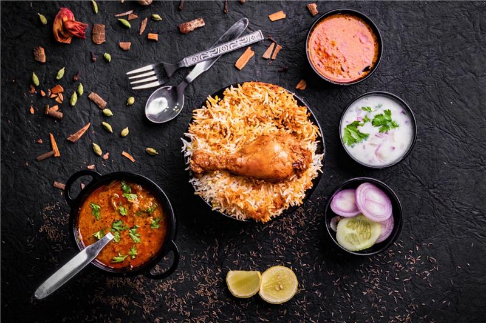
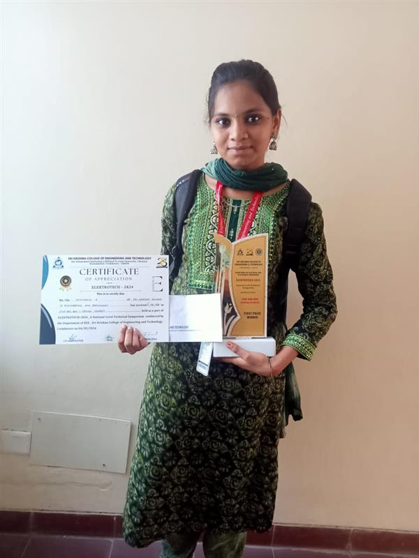
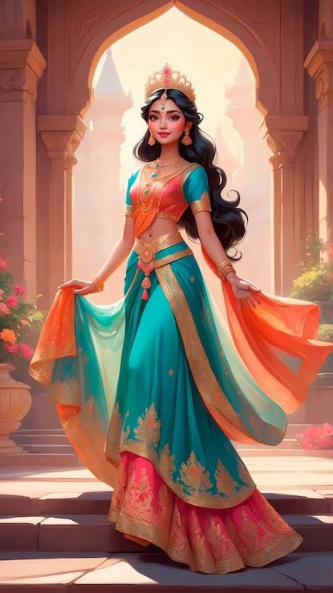
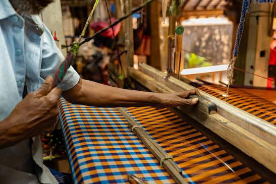
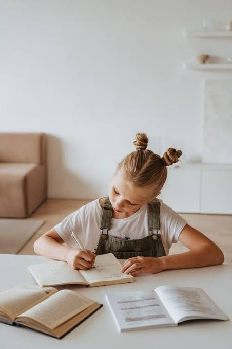

Music is My Mood
There's a song for almost every moment of my day.
HELLO, WELCOME TO MY WORLD
"Attitude is a little thing that makes a big difference."
Explore My Journey
BEYOND THE PROFILE
A curious soul with a mind full of ideas, a playlist that's always playing and a habit of finding something interesting in almost everything.
I love exploring new things, learning along the way and turning little ideas into something meaningful. Some days I'm super productive, and some days my to-do list is more productive than me!
I believe life is a journey of little moments, unexpected lessons, good music and a whole lot of positive attitude.
Still figuring things out, but making sure to enjoy the journey!
Life is shaped by your thoughts..
எண்ணம் போல் வாழ்க்கை
There's a song for almost every moment of my day.
One question often leads to ten more questions!
Enjoying today's moments while dreaming about tomorrow.
Not perfect, just perfectly me.
MY PROFESSIONAL PATH
Every step has shaped the person I am becoming.
Sri Krishna College of Engineering And Technology
My engineering journey helped me to build a foundation in programming, problem-solving, critical thinking and software development.
Cognizant
Explored React, Java fundamentals and Spring Boot. Worked on a real-time Hospital Management Application and gained practical development experience.
PSIOG DIGITAL PRIVATE LIMITED
Continuing my professional journey through learning, improving my technical skills and gaining experience in the software industry.
The journey continues...
A few little things that make my everyday life more colourful, meaningful and enjoyable.
Whether I'm working, walking or relaxing, there's always a song playing somewhere. Music makes even ordinary moments special.
Dhanush inspires me through his journey. His determination to keep moving forward despite criticism reminds me to believe in myself and never give up.

03Non-vegetarian food is always my choice. Good food has a special way of making an ordinary day feel better!
My favourite place doesn't need to be a particular destination. Anywhere feels special when I'm with my favourite person.
The little things make life beautiful.
Every experience has a story, and every little milestone is a reminder of how far I've come.

01Participated in a college coding competition, secured first place and took home a cash prize. A little confidence boost that made the effort even more rewarding!
Took part in hackathons, including CyberX Hackathon at VIT Chennai. An experience filled with ideas, teamwork, challenges and learning beyond the classroom.

03Participated in a handloom fashion show, celebrating creativity, tradition and the beauty of handwoven designs.
Different personalities, endless love, and one place that will always feel like home.

01A hardworking weaver who turns threads into beautiful creations. His dedication, patience, and commitment inspire me every day. He has taught me the value of hard work and never giving up.
The heart of our home and my biggest source of strength. Her unconditional love, care, and countless little sacrifices make our family stronger every single day.

03My little bundle of chaos! From silly arguments to unforgettable moments, she makes life more entertaining than it needs to be.
Beyond responsibilities and routines, these are the little things that bring out my creative side.
Music is a part of my everyday life. I enjoy listening to all kinds of songs, whether I'm working, walking, relaxing, or simply in the mood for a little musical break. There's always a song for every moment!
EVERY MOOD HAS A SOUNDActing is another side of me that I enjoy exploring. I love expressing emotions, stepping into different characters, and bringing stories to life. It's my way of discovering creativity beyond everyday life.
EVERY CHARACTER HAS A STORY